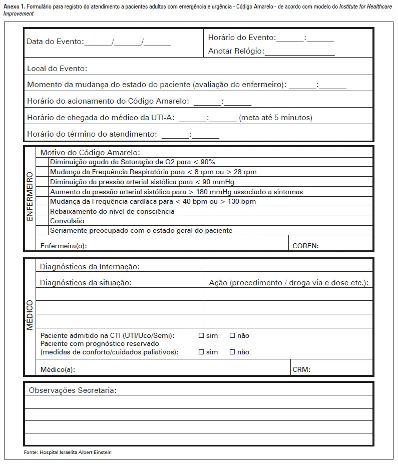
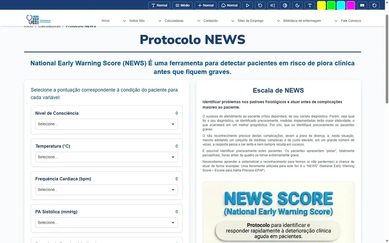

Time de Resposta Rápida (TRR)
No âmbito do PlanificaSUS e da Segurança do Paciente, o Time de Resposta Rápida (TRR) é uma estratégia vital projetada para prevenir a deterioração clínica de pacientes internados fora da Unidade de Terapia Intensiva (UTI).
A premissa central é que a parada cardiorrespiratória (PCR) raramente é um evento súbito; ela é frequentemente precedida por horas de instabilidade fisiológica (alterações nos sinais vitais) que, se detectadas e tratadas precocemente, podem ser revertidas.
Implantação
A implantação do TRR visa atingir metas críticas de segurança hospitalar:
- Reduzir a ocorrência de Paradas Cardiorrespiratórias (PCR) em unidades de internação (Código Azul).
- Diminuir a mortalidade hospitalar geral.
- Reduzir admissões não planejadas na UTI, ou garantir que, quando necessárias, ocorram em melhores condições clínicas.
- Apoiar a equipe de enfermagem da ponta com suporte especializado imediato.
Estrutura do Sistema de Resposta Rápida
O sistema não é apenas uma equipe, mas um processo composto por dois "braços" e um componente de gestão:
Braço Aferente (Detecção e Acionamento)
É a vigilância contínua. Envolve a equipe da unidade de internação (enfermeiros e técnicos) identificando sinais de alerta.
Ferramentas
Uso de escalas de alerta precoce como NEWS para adultos ou PEWS (Pediatric Early Warning Score) para crianças.

Ação
Ao identificar um "gatilho" (pontuação na escala ou sinal vital alterado), a equipe aciona o time.
Braço Eferente (Resposta)
É o time propriamente dito que responde ao chamado.
Composição Típica
Médico (geralmente intensivista ou hospitalista), Enfermeiro de terapia intensiva e Fisioterapeuta.
Ação
Avaliação imediata à beira do leito, estabilização do paciente e decisão sobre o destino (manter na unidade com novas condutas ou transferir para UTI).

Componente Administrativo (Gestão e Qualidade)
Monitoramento dos dados para melhoria contínua.
Indicadores: Número de chamados, tempo de resposta, taxa de PCR por 1.000 altas, mortalidade hospitalar.
4. Critérios de Acionamento (Gatilhos Comuns)
O manual destaca que o acionamento deve ser objetivo (baseado em dados) ou subjetivo (preocupação da equipe).
Sinais Vitais de Alerta (Exemplos)
| Parâmetro | Critério de Acionamento (Exemplo) |
|---|---|
| Vias Aéreas | Ameaça de obstrução, estridor |
| Respiração | FR < 8 ou> 28 ipm; Saturação O2 < 90% |
| Circulação | FC < 40 ou> 130 bpm; PAS < 90 mmHg |
| Neurológico | Queda no nível de consciência (Glasgow), convulsão |
| Outros | Diurese < 50ml/4h; Preocupação da equipe ("O paciente não parece bem") |
Nota: O "Código Amarelo" é frequentemente usado para deterioração clínica, enquanto o "Código Azul" é reservado para PCR confirmada.
Passos para Implantação (Roteiro PlanificaSUS)
- Sensibilização: Engajar a diretoria e as equipes assistenciais.
- Definição de Protocolos: Escolher as escalas (MEWS/NEWS) e definir o fluxo de chamadas.
- Capacitação: Treinar as equipes de enfermaria para reconhecer a gravidade e "ter permissão" para chamar ajuda.
- Infraestrutura: Garantir equipamentos (carrinho de emergência, desfibrilador) e sistema de comunicação (bipe, telefone exclusivo).
- Ciclos de Melhoria (PDCA): Avaliar os atendimentos e ajustar falhas no processo.
Conclusão
O TRR muda a cultura hospitalar de "reação ao caos" para "prevenção proativa". No contexto do PlanificaSUS, ele integra os cuidados, garante que o paciente receba a atenção certa no tempo certo e empodera a equipe de enfermagem através de critérios claros de comunicação e suporte.
Aqui no Site Calculadoras de Enfermagem possuímos uma Calculadora automatizada da Escala de News, voce seleciona os parâmetros clínicos do paciente e clicando em Calcular verifica se há a necessidade de acionar o TRR!

Ministério da Saúde / PlanificaSUS. Guia de Implantação de Protocolos de Segurança do Paciente. Disponível em portais oficiais do PROADI-SUS e CONASS.
https://www.scielo.br/j/eins/a/BgQ6xdvSNCnpYFhpHMScBSc/?lang=pt